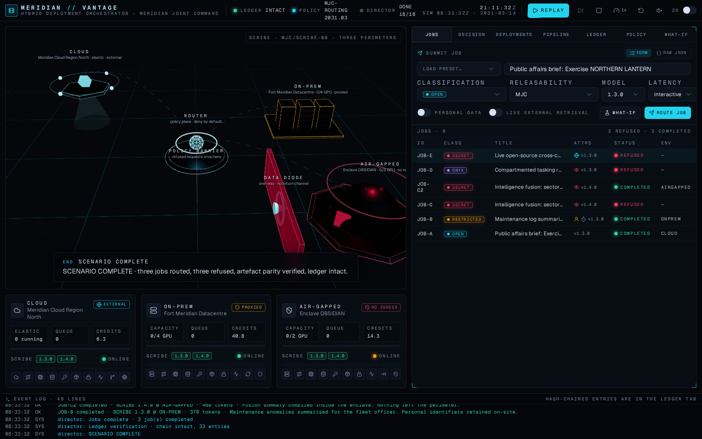
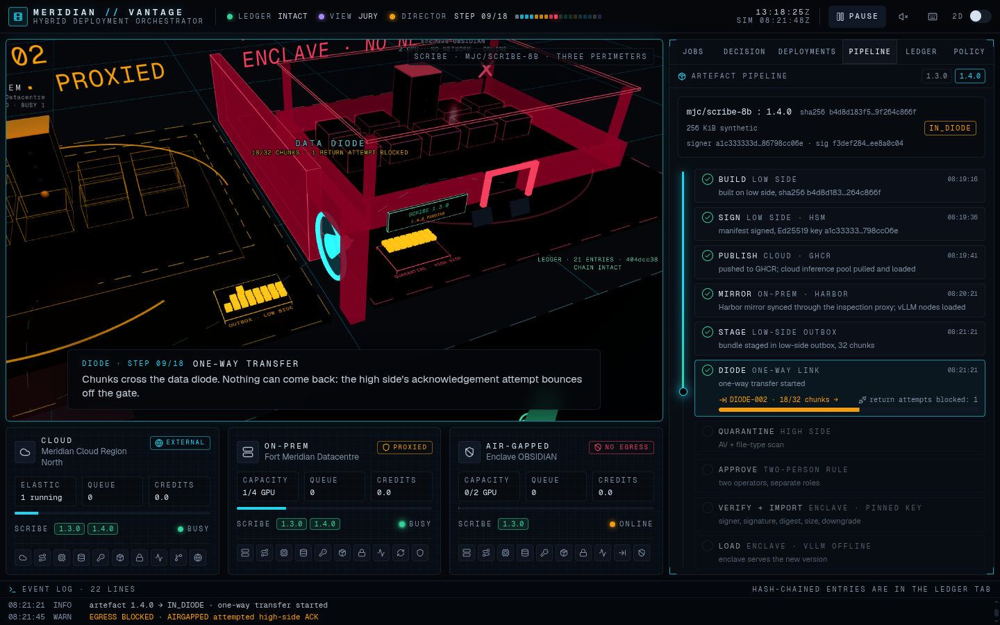
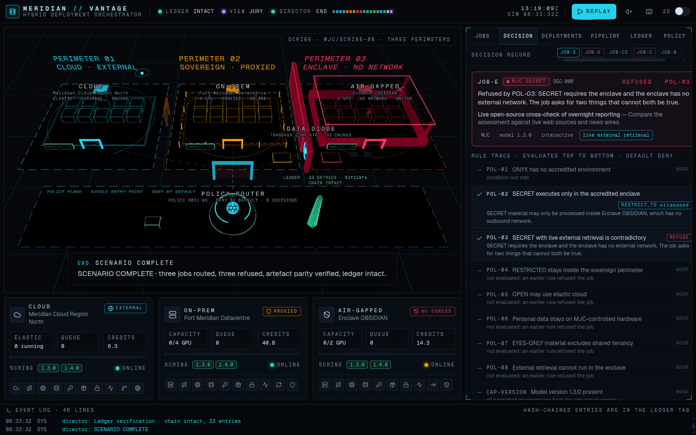
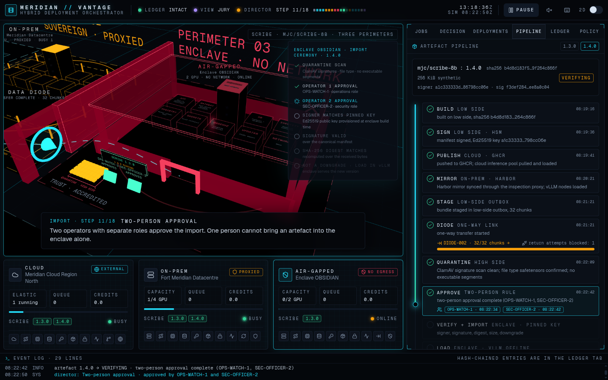

01 · Title
Hackathon submission · {{DATE}}
Meridian Joint Command · Digital Assurance
MERIDIAN //
VANTAGE
Hybrid Deployment Orchestrator
Cloud + On-Prem + Air-Gapped simulation
One model. Three perimeters. Every decision justified. A simulator and control room that deploys the same signed AI model everywhere, routes each job by classification policy, refuses what must not run, and proves it in a hash-chained ledger.
Next.js 16TypeScriptreact-three-fibershadcn/uiEd25519 · SHA-256vitest · fast-check · PlaywrightVercel

Control room after the scenario · 3 jobs routed · 3 refused · parity verified · ledger intact
Cloud
Meridian Cloud Region North · elastic · external
On-prem
Fort Meridian Datacentre · 4 GPU · proxied
Air-gapped
Enclave OBSIDIAN · 2 GPU · no network · diode
02 · Project objective
Fit to the brief · relevance
Government AI never lives in one place. The model still has to.
The problem
Some data may go to public cloud, some must stay on-prem, and the most sensitive must never leave an air-gapped enclave. Today that means three pipelines maintained by hand, a change board deciding by email where a request may run, spreadsheets tracking which model version sits where, and artefacts carried into the enclave on media nobody verifies. Each step is a place where a SECRET request lands in the wrong perimeter or the enclave runs a stale or tampered model.
Who buys and deploys it · what it replaces
- Buyer: the digital-assurance or platform directorate of a defence or government organisation that already runs a sovereign cloud tenancy, a datacentre and accredited enclaves, and the integrators who build for them.
- Operator: the platform team that owns all three environments and the security officers who approve what enters the enclave.
- Replaces: per-environment pipelines, manual routing decisions, unverified media transfers and audit spreadsheets, with one policy plane over the platforms they already run (Kubernetes, vLLM, registries, a diode).
Why this approach now, not the one of three years ago
- Open-weight models served by vLLM behind an OpenAI-compatible gateway make "the same model in every perimeter" practical; three years ago the capable models were API-only.
- Policy as code (OPA, Cedar) and supply-chain signing (Sigstore, SLSA) are standard practice; the router and the signed pipeline apply the same ideas to model deployment.
- Sovereign and air-gapped cloud and unidirectional gateways are commercial products; regulation increasingly demands a tamper-evident record of automated decisions.
Objective · the minimum deliverable, and how we meet it
| Brief asks for | MERIDIAN // VANTAGE delivers |
|---|
| Three simulated environments with different properties | Cloud (elastic, metered, external), On-prem (4 fixed GPU slots, queue, proxied egress), Air-gapped (2 slots, no network, diode import) |
| Classification scheme and routing policies | OPEN / RESTRICTED / SECRET / ONYX plus attributes (personal data, live retrieval, releasability, model version); eight rules as data, default DENY |
| Router that logs decision and justification | Every submission yields a full record: rule trace, candidate table, verdict, tie-break, ledger hash |
| Deployment view incl. how the artefact reached the enclave | Version matrix with SHA-256 parity; pipeline view from build to diode, quarantine, two-person approval, verify, load |
| Blocked-request path with the reason shown | Three distinct refusals: no accredited environment, version not yet imported, contradictory constraints; plus what-if counterfactuals |
Design principles
- Deny by default. A job runs only where a rule explicitly grants it; capability checks can only remove options, never add them.
- Nothing spills downward. A full on-prem queues; it never bursts RESTRICTED work to cloud.
- Refuse rather than downgrade. If the enclave lacks the requested version, the job is refused with the reason, not silently run on an older model.
- Everything is evidence. Decisions and imports are links in a hash chain that anyone can recompute.
- Proves itself headless. The engine is pure TypeScript; the film on top is optional.
03 · Proposed solution
Architecture · same model, three stacks
One policy plane, three real stacks, one signed artefact through the diode.
Job
title, classification, personal data, live retrieval, releasability, model version, latency · validated by zod, never crashes
→
Policy engine
rules.json evaluated top-down: RESTRICT_TO grants, EXCLUDE subtracts, REFUSE ends · default DENY · every rule traced
→
Capability + selection
CAP-VERSION (loaded there?), CAP-EGRESS (network?), CAP-SLOTS (queue) · then free capacity → cost → free slots
→
Environment
dispatch or queue in cloud / on-prem / enclave; enclave egress guard blocks any outbound call
→
Ledger
hashn = SHA-256(hashn-1 ‖ canonical-json(entryn)) · decisions, dispatches, imports · verifiable, tamper-evident
ARTEFACT PIPELINE BUILT → SIGNED (Ed25519 over canonical manifest) → PUBLISHED (cloud registry) → MIRRORED (on-prem Harbor via proxy) → STAGED → IN_DIODE (chunked, one-way, no ACK; return attempts bounce and are counted) → QUARANTINE (AV + file type) → VERIFYING (two distinct operators) → IMPORTED (signer = pinned key · signature valid · SHA-256 matches · size · not a downgrade) → LOADED └ REJECTED on any failed check
Same model · three stacks
| Layer | Cloud | On-prem | Air-gapped |
|---|
| App | Vercel (Next.js) | Next.js standalone on k3s | Same image, diode-imported |
| AI gateway | Vercel AI Gateway | Self-hosted OpenAI-compatible gateway | Same, offline, no external providers |
| Model serving | Managed GPU inference (vLLM) | vLLM on 4 GPU nodes | vLLM offline, weights from signed bundle |
| Database | Supabase Cloud (Postgres, pgvector) | Self-hosted Supabase | Postgres + pgvector, local backups |
| Identity | Supabase Auth | Keycloak | Keycloak offline, smart-card |
| Registry | GHCR | Harbor mirror (proxy sync) | Harbor, fed only by verified imports |
| Secrets · Observability | Vercel env · Langfuse Cloud | Vault · Langfuse + Prometheus | Vault sealed · Langfuse offline |
| Updates · Network | CI/CD push · external | Scheduled proxy pull · proxied | Diode import, two-person · none |
Parity compares the SHA-256 of the loaded weights across the three environments. In production: evaluator → OPA/Cedar sidecar, signer → Sigstore cosign, diode → commercial unidirectional gateway.

Director mode: chunks cross the diode; the enclave's ACK bounces off the gate
Under the hood
- Pure TypeScript engine runs in the browser, in Node (npm run demo) and in the tests; deterministic seed, clock and PRNG.
- Crypto: SHA-256 + Ed25519 (RFC 8032, strict) from audited noble libraries over canonical JSON. No encryption, so no nonce to reuse.
- Control room: Next.js 16, shadcn/ui, a react-three-fiber scene with a 2D fallback, and a scripted director that plays the scenario like a film.
- What-if: dry-run plus single-change counterfactuals for refused jobs.
04 · Solution validation
Does it work · is it correct · does it survive
Three classifications, three environments, three distinct refusals.
The demo scenario · identical on every run (seeded)
| Job | Classification · attributes | Outcome | Why |
|---|
| A | OPEN public-affairs brief | → CLOUD | POL-05 permits cloud or on-prem; cloud wins on cost (6.3 vs 10.2 credits) |
| B | RESTRICTED personal data | → ON-PREM | POL-04 sovereign perimeter; POL-06 excludes cloud for personal data |
| C | SECRET needs model 1.4.0 | REFUSED | CAP-VERSION: enclave still runs 1.3.0; refuse rather than downgrade |
| — | Ship 1.4.0 through the pipeline | PARITY OK | Same SHA-256 in cloud, on-prem and enclave after diode + two-person import |
| C′ | SECRET same job again | → AIR-GAPPED | POL-02: SECRET executes only inside the enclave |
| D | ONYX compartmented | REFUSED | POL-01: no environment in this deployment is accredited for ONYX |
| E | SECRET live external retrieval | REFUSED | POL-03: SECRET means the enclave; the enclave has no network |
Automated checks
- 40 vitest tests, property-based with fast-check: SECRET never on cloud or on-prem; ONYX always refused; live retrieval never in the enclave; personal data never in cloud; every verdict has a rule id and justification; ledger tampering detected at any position; flipped byte or wrong signer always rejected; schema never throws.
- Headless demo exits non-zero on failure; CI runs it twice and diffs decisions, digests and ledger head.
- Playwright plays the UI to "SCENARIO COMPLETE", breaks and restores the ledger, submits garbage JSON, resets.
- Fresh clone: npm ci, demo, tests and build pass from a clean checkout.
Unexpected input and second runs
- Malformed JSON, unknown classifications, wrong types and extra fields are rejected with field-level messages; nothing is dispatched.
- Downgrade imports are refused; tampered bundles are rejected with the failing check named.
- Reset restores the seed: a second run reproduces the first, hash for hash.
- No WebGL or a scene error drops to the 2D map; an error boundary keeps the screen readable.

Decision record: verdict, justification, rule trace, candidates, ledger hash

Import ceremony: scan, two approvals, pinned key, signature, digest, load
Cryptography, applied deliberately
SHA-256 for digests and the ledger chain; Ed25519 (strict RFC 8032) over a canonical JSON encoding that is property-tested for key-order independence, so a re-serialised manifest verifies and an edited one does not. Nothing is encrypted: integrity and authenticity are the requirement, confidentiality across the gap is the diode's physical property, so there is no nonce to reuse. Keys derive from the demo seed; in production the build key lives in an HSM and only the public half is pinned in each environment.
05 · Results and conclusions
What we showed · what is next
The prototype completes the brief end to end, deterministically, from a single command.
3 / 3
jobs routed to the correct perimeter
3
refusals, each with a distinct logged reason
2
model versions with digest parity in all three envs
33
hash-chained ledger entries per run, verifiable
40 + 2
unit / property tests + browser tests, all green
0
API keys, network calls or databases required
What is new here
- Refuse, then explain. What-if counterfactuals tell an operator the one change that would make a refused job routable, without dispatching anything.
- Decisions as evidence. Routing history is a SHA-256 hash chain a regulator can recompute; the demo tampers with it live and watches the verifier point at the entry.
- The diode is a first-class actor. One-way transfer with a counted, visible return-path bounce, quarantine, and a two-person ceremony before a pinned-key verification.
- One artefact, three stacks, one digest. Parity turns "consistently deployable everywhere" into a checkable fact.
- Film and proof from the same engine. The 3D director and the headless CLI run identical steps.
Limitations, stated plainly
- It is a simulator: capacity, cost and latency are modelled, not measured; inference produces a simulated output line.
- The diode is a state machine, not a protocol implementation; real gateways add forward error correction and out-of-band reconciliation.
- Policy attributes are declared by the submitter; in production they come from labelled data sources and an identity provider, not a form.
- Single fictional organisation; coalition releasability across several partners is modelled by one attribute only.
- The architecture is deliberately the production one, so replacing the evaluator with OPA, the signer with cosign and the environments with real clusters changes adapters, not the control room.
What is next
- Now: real adapters behind the same interfaces: OpenAI-compatible endpoints for cloud and on-prem vLLM, cosign-signed OCI bundles, an OPA/Rego export of rules.json, Supabase persistence for the ledger.
- Next: label-derived attributes from data sources and identity claims; coalition releasability with per-partner enclaves; capacity forecasting and cost-aware scheduling windows; SLSA provenance and SBOMs travelling with the bundle.
- Later: an outbound diode for telemetry with differential privacy; hardware attestation of the enclave nodes before load; model watermarking to detect exfiltration; formal checks of the policy (no SECRET path to cloud, ever) with a model checker; a declassification workflow with its own ledger.
- Full roadmap: docs/ROADMAP.md in the repository.
Conclusion
The brief describes a routing problem, a deployment problem and an evidence problem. MERIDIAN // VANTAGE answers all three with one small engine: policy as data that denies by default, a signed artefact that reaches the enclave only through a one-way link and a two-person check, and a ledger that turns every decision into a verifiable link. It runs from the README, survives a second run and hostile input, and the cinematic control room on top makes the argument in ninety seconds. The next step is not more simulation but real adapters, and the interfaces are already there.